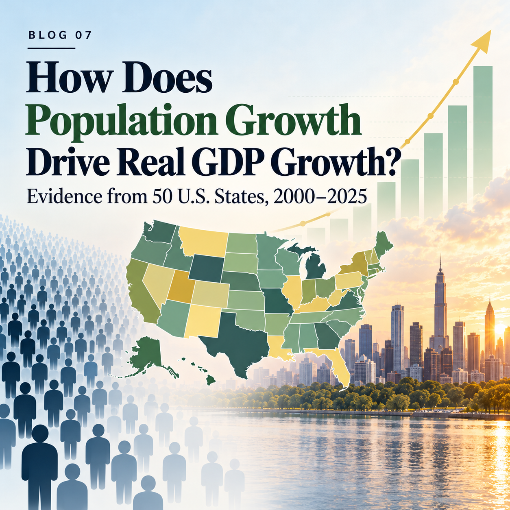

Blog 7: More Population, More Prosperity?

When Population Grows, Does Prosperity Follow?
Population growth is often seen as a sign of economic strength. More residents mean more workers, more consumers, and potentially more tax revenue. For a state looking to grow its economy, attracting new residents can seem like an obvious path to growth.
But there is an important distinction between having a more prosperous economy and having a bigger population. A state’s GDP can rise simply because more people live and work there, even if the amount of economic output produced per resident barely changes. In other words, economic growth does not necessarily mean that the average resident is becoming better off.
This raises a question worth examining: When states gain population, how much of their economic growth comes from having more people, and how much comes from producing more per person?
To explore this question, I examine population and real GDP trends across all 50 U.S. states from 2000 to 2025. The results reveal a consistent pattern: population growth is closely associated with the expansion of a state’s overall economy, but it tells us surprisingly little about improvements in economic output per resident.
Two Ways an Economy Can Grow
To understand the relationship, we first need to separate two sources of economic growth.
The first is population growth. When a state gains residents, its workforce and consumer base can expand, increasing total economic activity. The second is growth in real GDP per capita, which measures how much inflation-adjusted economic output a state produces per resident.
These two components are connected through a simple relationship:
\[\text{Real GDP} = \text{Population} \times \text{Real GDP per capita}\]
This means that total GDP can increase because the population is growing, because output per person is rising, or because both are happening at the same time.
In terms of annual growth rates, the exact relationship is:
\[g_{GDP}=g_{POP}+g_{PC}+g_{POP}g_{PC}\]
The final term accounts for the interaction between population growth and per-capita GDP growth. Because this term is usually small, the two growth rates can be added together to provide a close approximation of total GDP growth.
This distinction matters because the two sources of growth tell us different things. Population growth describes an increase in economic scale, while growth in real GDP per capita provides a measure of whether economic output is increasing relative to the number of people who live in the state.
To see how these forces have evolved, I use annual data for all 50 states between 2000 and 2025, with annual growth rates calculated from 2001 onward.
What Happens When We Follow States Over Time?
Rather than comparing states at just one point in time, the chart allows us to follow the same states through economic expansions, recessions, and recoveries. This makes it easier to see why population growth and overall economic performance do not always move together.
Consider 2009, when the Great Recession was affecting economies across the country. In that year, 39 states experienced population growth even as their total real GDP declined. These states were gaining residents, but the decline in economic output per person was large enough to outweigh the contribution of population growth.
A similar pattern appeared in 2020, when the COVID-19 pandemic disrupted economic activity. In 37 states, population increased while total real GDP fell. Once again, having more residents did not prevent the overall economy from contracting.
The following year tells a very different story. In 2021, real GDP per capita increased in all 50 states as economic activity rebounded. The improvement was broad-based, rather than limited to states experiencing rapid population growth.
Taken together, these years illustrate why population growth alone cannot explain a state’s economic performance. Population may continue to rise through a downturn, but whether total output expands or contracts depends heavily on what happens to output per resident.
More People, More GDP—but Not Necessarily More GDP per Person
Across the 50 states, annualized population growth between 2000 and 2025 has a positive correlation of 0.77 with annualized total real GDP growth. States that gained population more rapidly generally also experienced faster growth in the overall size of their economies. However, the correlation between population growth and real GDP-per-capita growth is 0.08, indicating almost no linear relationship across states over this period.
There is a straightforward reason for this contrast. More residents can contribute to a larger total economy even when output per resident changes very little. But adding people does not, by itself, ensure that economic output grows faster than the population.
The experiences of Nevada and Utah make this difference especially clear.
Between 2000 and 2025, Nevada’s population grew at an annualized rate of approximately 1.96%, among the faster rates in the country. Yet its real GDP per capita grew by only 0.47% per year. The state’s economy expanded substantially in size, but growth in output per resident was relatively modest.
Utah experienced similarly rapid population growth, averaging 1.84% per year. Unlike Nevada, however, Utah also recorded strong real GDP-per-capita growth of 1.80% annually.
Both states became significantly more populous, but their economic trajectories differed. Utah combined population expansion with much faster growth in output per resident, while Nevada’s overall economic expansion relied more heavily on the addition of people.
The comparison shows why population growth should not be treated as a substitute for per-capita economic performance. Two states can attract residents at similar rates while experiencing very different outcomes in how much output they produce per person.
The most recent year in the dataset offers another useful comparison. In 2025, Texas experienced population growth of approximately 1.25%, alongside real GDP growth of 2.85%. California, by contrast, had a nearly unchanged population, with a slight decline of 0.02%, yet its real GDP grew by 3.54%.
California’s economy therefore grew faster than Texas’s that year despite having virtually no population growth. The difference reflects stronger growth in output per resident, illustrating that a state does not need rapid population expansion to achieve substantial overall economic growth.
You can explore this contrast directly in Figure 1 by moving the slider to 2025 and hovering over Texas and California.
What Can We Actually Conclude?
Population growth can make a state’s economy growth. What it cannot guarantee is that the economy will generate more output for each person who lives there.
That is the central lesson of the past 25 years. During recessions, many states continued gaining residents while their economies contracted. During recoveries, per-capita output rose broadly, including in states without exceptionally strong population growth. And over the full period, states with similar population trends often followed very different paths in real GDP per capita.
For policymakers, the implication is not that attracting residents is unimportant. Rather, population growth should be understood as one part of a broader economic strategy, not as the ultimate measure of its success.
A larger population creates opportunities, but turning those opportunities into lasting economic progress depends on factors such as productive investment, workers’ skills, infrastructure, and the ability of businesses to generate greater value.
The goal, ultimately, should not be simply to build a bigger economy. It should be to build an economy that produces more for the people who live in it.
Data and Methodology
I collected annual population and real GDP data for all 50 U.S. states from 2000 to 2025 using the Federal Reserve Economic Data (FRED) API. Population data originate from the U.S. Census Bureau, while real GDP data come from the Bureau of Economic Analysis (BEA), measured in inflation-adjusted chained 2017 dollars. Using R, we downloaded the datasets, checked their completeness, and verified that each state had observations for all 26 years. We then calculated annual population growth, real GDP growth, and real GDP per capita growth to distinguish economic expansion associated with population increases from growth in output per resident. We also calculated the ratio of population growth to real GDP growth to examine how their relative magnitudes varied across states and years. Finally, we used Plotly in R to create two interactive visualizations, allowing readers to compare population and real GDP across states and explore changes in population’s share of GDP growth over time through year sliders and hover information. These comparisons are descriptive and do not establish a causal effect of population growth on GDP.
For the specific code and data to reproduce the results, please visit RodgersYe_6400_Blog07